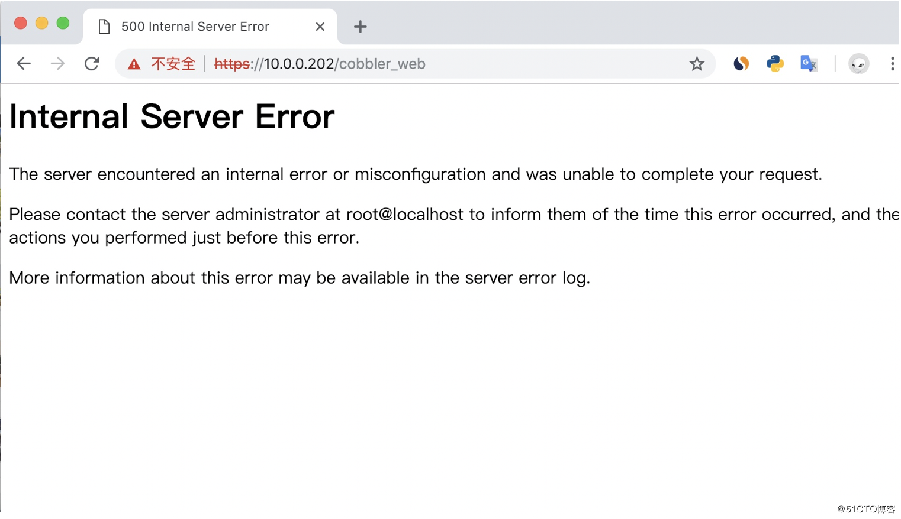

1. cobbler简介
Cobbler是一个Linux服务器安装的服务，可以通过网络启动(PXE)的方式来快速安装、重装物理服务器和虚拟机，同时还可以管理DHCP，DNS等。
Cobbler可以使用命令行方式管理，也提供了基于Web的界面管理工具(cobbler-web)，还提供了API接口，可以方便二次开发使用。
Cobbler是较早前的kickstart的升级版，优点是比较容易配置，还自带web界面比较易于管理。
Cobbler内置了一个轻量级配置管理系统，但它也支持和其它配置管理系统集成，如Puppet，暂时不支持SaltStack。
Cobbler官网
cobbler集成的服务
- PXE服务支持
- DHCP服务管理
- DNS服务管理(可选bind,dnsmasq)
- 电源管理
- Kickstart服务支持
- YUM仓库管理
- TFTP(PXE启动时需要)
- Apache(提供kickstart的安装源，并提供定制化的kickstart配置)
cobbler配置文件详解cobbler配置文件目录在/etc/cobbler
| 配置文件 | 作用 |
|---|---|
| /etc/cobbler/settings | cobbler 主配置文件 |
| /etc/cobbler/iso/ | iso模板配置文件 |
| /etc/cobbler/pxe | pxe模板配置文件 |
| /etc/cobbler/power | 电源配置文件 |
| /etc/cobbler/user.conf | web服务授权配置文件 |
| /etc/cobbler/users.digest | web访问的用户名密码配置文件 |
| /etc/cobbler/dhcp.template | dhcp服务器的的配置模板 |
| /etc/cobbler/dnsmasq.template | dns服务器的配置模板 |
| /etc/cobbler/tftpd.template | tftp服务的配置模板 |
| /etc/cobbler/modules.conf | 模块的配置文件 |
cobbler数据目录
| 目录 | 作用 |
|---|---|
| /var/lib/cobbler/config/ | 用于存放distros，system，profiles等信息配置文件 |
| /var/lib/cobbler/triggers/ | 用于存放用户定义的cobbler命令 |
| /var/lib/cobbler/kickstart/ | 默认存放kickstart文件 |
| /var/lib/cobbler/loaders/ | 存放各种引导程序以及镜像目录 |
| /var/www/cobbler/ks_mirror/ | 导入的发行版系统的所有数据 |
| /var/www/cobbler/images/ | 导入发行版的kernel和initrd镜像用于远程网络启动 |
| /var/www/cobbler/repo_mirror/ | yum仓库存储目录 |
cobbler日志文件
| 日志文件路径 | 说明 |
|---|---|
| /var/log/cobbler/installing | 客户端安装日志 |
| /var/log/cobbler/cobbler.log | cobbler日志 |
cobbler命令详解
1 | cobbler check //核对当前设置是否有问题 |
2. cobbler服务端部署
1 | 配置yum源 |
3.客户端安装
新建虚拟机从PXE启动，若出现以下界面则表示成功：

4.定制安装
定制安装步骤：
- 统计服务器的MAC地址
- 配置皮匠
- 安装
在访问cobbler web界面到时候出现以下提示

ssl的报错日志如下：
1 | [root@Cobbler ~]# tail -f /var/log/httpd/ssl_error_log |
查看cobbler的py配置文件
1 | [root@Cobbler ~]# sed -n '38,41p' /usr/share/cobbler/web/settings.py |
初步判断应该是pythone-django版本问题
1 | #下载pip.py |
最后完美解决
统计mac地址此处就不赘述了，直接最重要的配置
在cobbler的web界面上配置：


同步配置并重启相关服务：
1 | [root@localhost ~]# cobbler sync |
最后开机自动会安装系统